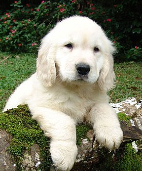

태어난 강아지는 생후 10일까지를 신생아로 본다. 강아지는 견종에 따라 체중이 매우 다양하며 태어난 지 14일 무렵 눈을 뜨고 소리에 반응하며 걷기 시작한다.
몸떨기 반사는 그보다 1주일 정도 빠르다. 젖 빨기는 첫 2주간은 2시간마다 이루어지며 8일 만에 몸무게가 두 배로 늘 정도로 빠르게 성장한다. 이 기간엔 따로 마련한 출산장에서 강아지의 관리를 전적으로 어미개에게 맡기는 것이 좋다.
강아지가 자신의 몸을 부들부들 떠는 몸떨기 반사는 체온을 유지하기 위한 자연스러운 반응이다. 강아지는 생후 3주에서 3개월에 걸쳐 한 배에서 나온 강아지들과 어미, 사람들과 사회적 관계를 맺는 이행기를 거친다
이 시기 강아지들에겐 나중에 어미나 같이 태어난 강아지와 떨어져 홀로 살아갈 앞날을 위해 다른 동물들과 마주치는 훈련이 필요하다. 이행기의 강아지는 호기심이 왕성하여 바닥에 떨어진 것은 전기 코드나 작은 물건을 가리지 않고 물어뜯기 때문에 안전에 주의하여야 한다.
생후 20일 - 30일까지 젖을 먹으며 그 이후엔 어미의 먹이에 관심을 갖는다. 생후 3주부터 이유식을 준비하여 준다. 이유식은 습기가 많은 물렁물렁한 음식으로 시작하며 시리얼, 아기밀, 다진 고기, 스크램블 에그 등을 혼합하여 고단백 고탄수화물 음식을 준다.